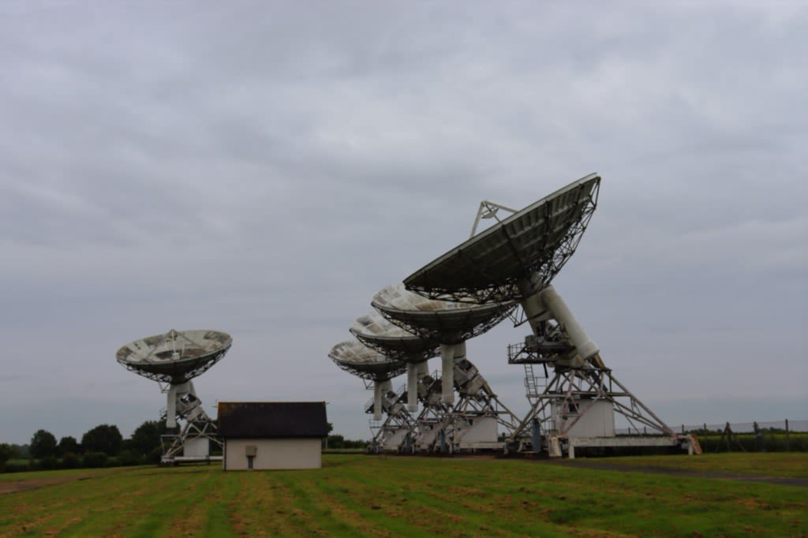
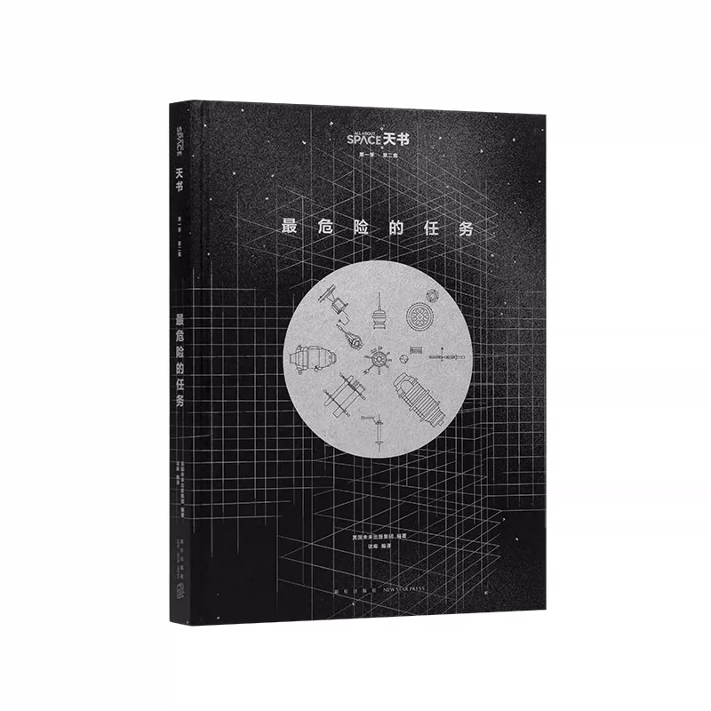
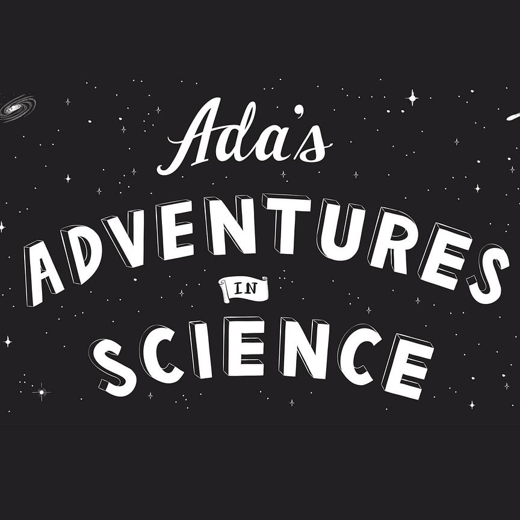

Radio survey methods and data products
Imaging, calibration, validation, and interpretation of large radio datasets.
Research
Postdoctoral Researcher
Astrophysics Group, Cavendish Laboratory, University of Cambridge
Interactive map
Collaborations
Imaging, calibration, validation, and interpretation of large radio datasets.
Trustworthy methods whose results can be checked, interpreted, and used by scientists in real research workflows.
Tools, documentation, data workflows, and collaboration practices that make research easier to share, check, and build on.
Publications
Built the first large-area 1″ imaging pipeline for the International LOFAR Telescope and produced a 1″ image and catalogue in ELAIS-N1. Later work built deeper high-resolution imaging products from this pipeline and used related data products in high-redshift radio relic science.
Developed an optimised w-stacking kernel for higher-accuracy wide-field imaging with fewer w-planes. The method is integrated into WSClean and is now the default w-stacking kernel used by major low-frequency radio arrays.
Derived optimal gridding and degridding kernels with analytical error bounds, reducing error by more than two orders of magnitude compared with traditional PSWF kernels for the same support size, with highly consistent error control across the retained area.
A systematic treatment of scalability strategies for radio imaging algorithms, software engineering, and parallel processing in the SKA era.
Talks
Outreach activities
A career conversation series for researchers in astronomy, astrophysics, and cosmology.
Open AstroCareerWorkbook and illustrated resources for self-understanding, access needs, and public-facing neurodiversity education.
Open resourcesI am coordinating the three-day Physics at Work outreach event for the Astrophysics Group. I have also given outreach talks for Cambridge Open Days, She Talks Science at Murray Edwards College, Hills Road Sixth Form College, and the Cavendish Physics at Work programme, including public introductions to radio interferometry, exoplanets, and gravitational-wave astronomy.

Supported school visits and public engagement as a tour guide at the Mullard Radio Astronomy Observatory.
Translated popular-science materials into Chinese, including two volumes in the Tianshu series, Light: A Very Short Introduction, and Ada's Adventures in Science.

